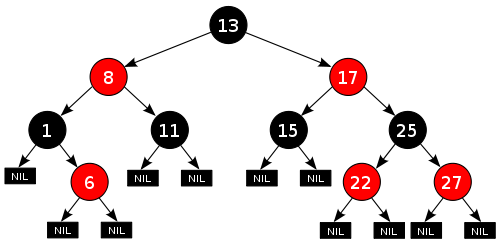

Standard Template Library II
- Maps - 2017
A map is an ordered sequence of pairs (key, value) in which we can look up a value based on a key. Data structures similar to map are associative arrays, hash tables, and red-black trees.
- map an ordered container of (key,value) pairs
- set an ordered container of keys
- unordered_map an unordered container of (key,value) pairs
- unordered_set an unordered container of keys
- multimap a map where a key can occur multiple times
- multiset a set where a key can occur multiple times
- unordered_multimap a unordered_map where a key can occur multiple times
- unordered_multiset a unordered_set where a key can occur multiple times
What is a map?
The map class template looks like this:
std::map<Key, Data, Compare, Alloc>
STP map implementations are more like a balanced binary search trees (BST). To be more specific, they are red-black trees.
Picture source: http://en.wikipedia.org/wiki/Red-black_tree
A tree is built up from nodes. A node holds a key, its corresponding value, and pointers to two descendants' nodes. We won't go into details, but one thing we should remember is that the red-black tree has guaranteed log(n) height tree.
Let's look at the simple code which shows how to use maps.
#include <iostream>
#include <map>
#include <string>
#include <utility>
using namespace std;
int main()
{
typedef map<string, int> mapType;
mapType populationMap;
populationMap.insert(pair<string, int>("China", 1339));
populationMap.insert(pair<string, int>("India", 1187));
populationMap.insert(mapType::value_type("US", 310));
populationMap.insert(mapType::value_type("Indonesia", 234));
populationMap.insert(make_pair("Brasil", 193));
populationMap.insert(make_pair("Pakistan", 170));
// Erase the end element using the erase function
// Because it's ordered map (by key),
// map elements are not in the order of the entry
// In this map it's US since it's ordered alphabetically.
mapType::iterator iter = --populationMap.end();
populationMap.erase(iter);
// output the size of the map
cout << "Size of populationMap: " << populationMap.size() << '\n';
for (iter = populationMap.begin(); iter != populationMap.end(); ++iter) {
cout << iter->first <<": "
<< iter->second << " million\n";
}
// find will return an iterator to the matching element if it is found
// or to the end of the map if the key is not found
string country("Indonesia");
iter = populationMap.find(country);
if( iter != populationMap.end() )
cout << country <<"'s populations is "
<< iter->second << " million\n";
else
cout << "Key is not in populationMap" << '\n';
// clear the entries in the map
populationMap.clear();
}
Output from the run is:
Size of populationMap: 5 Brasil: 193 million China: 1339 million India: 1187 million Indonesia: 234 million Pakistan: 170 million Indonesia's populations is 234 million
To use a map, we must include the header file <map>
#include <map>
Let's look at the sample program counting the number of words in the input file.
When we define:
map<string, int>
the first template argument is the type of the element's key, and the second template argument is the type of the element's value.
The template for the map defined inside namespace std is:
namespace std {
template <class Key, class T,
class Compare = less<Key>,
class Allocator = allocator<pair<const Key, T> > >
class map;
The elements of a map may have any types of key and value that meet the following two requirements:
- The key/value pair must be assignable and copyable.
- The key must be comparable with the sorting criterion.
In the code:
populationMap.insert(pair<string, int>("China", 1339));
populationMap.insert(pair<string, int>("India", 1187));
populationMap.insert(mapType::value_type("US", 310));
populationMap.insert(mapType::value_type("Indonesia", 234));
populationMap.insert(make_pair("Brasil", 193));
populationMap.insert(make_pair("Pakistan", 170));
we are inserting a key/value pair in three different ways:
- Use pair<>
Use pair<> directly.
pair<string, int>("India", 1187)); - Use value_type
To avoid implicit type conversion, we pass the correct type explicitly by using value_type, which is provided as a type definition by the container type.
populationMap.insert(mapType::value_type("US", 310));
- Use make_pair
The most convenient way is to use make_pair function. This function produces a pair object that contains the two values passed as arguments:populationMap.insert(make_pair("Brasil", 193));
Then when we tried to erase the element at the end, we used '--' operator on the iterator end() because it is pointing to the one passed the end element.
mapType::iterator iter = --populationMap.end();
The following example reads in string data from a file and fills in vector.
The std::istreamstd::ctype_base::space is the default delimiter which makes it stop reading further character from the source when it sees whitespace or newline.
As we can see from the data file (names) we're using:
Mao Asada Carolina Kostner Ashley Wagner Gracie Gold Akiko Suzuki Kanako Murakami Adelina Sotnikova Kaetlyn Osmond Yuna Kim Julia Lipnitskaiaas an input. When we reads in the data, it stores first_name and last name into the vector. But we want to treat them as a pair. So, we later put the pair into a map.
Here is the code:
/* w.cpp */
#include <iostream>
#include <fstream>
#include <string>
#include <vector>
#include <map>
using namespace std;
int read_words(vector<string>& words, ifstream& in)
{
int i = 0;
while(!in.eof())
in >> words[i++];
return i-1;
}
int main()
{
ifstream ifp("names");
vector<string> w(500);
int number_of_words = read_words(w, ifp);
w.resize(number_of_words);
for(auto it : w)
cout << it << " ";
cout << endl;
map<string, string> wMap;
for(int i = 0; i < number_of_words;) {
wMap.insert(pair<string, string>(w[i], w[i+1]));
i += 2;
}
cout << "wMap.size()=" << wMap.size() << endl;
for(auto it = wMap.begin(); it != wMap.end(); it++)
cout << it->first << " " << it->second << endl;
}
Output:
wMap.size()=10 Adelina Sotnikova Akiko Suzuki Ashley Wagner Carolina Kostner Gracie Gold Julia Lipnitskaia Kaetlyn Osmond Kanako Murakami Mao Asada Yuna Kim
Note that we're using C++11 auto keyword that can deduce the type from context, we should let the compiler know we want the file compiled with C++11:
g++ -std=c++11 -o w w.cpp
In his book "Effective STL", Scott Meyers talked about the efficiency of map::operator[] and map::insert. He recommends using map::insert for adding and map::operator[] for updates.
#include <iostream>
#include <map>
#include <string>
int main ()
{
std::map<std::string, int> myMap;
myMap.insert(std::map<std::string, int>::value_type("First", 1)); // add
myMap["First"] = 101; // update
for (auto it: myMap)
std::cout << it.first << ": " << it.second << std::endl;
return 0;
}
Following code counts the word using maps.
It first reads in the Stairway To Heaven Lyrics (Led Zeppelin), then put it into a map<string,int>. The first string argument is the word and the second argument is the counter which shows how many times the key appeared in the lyric.
#include <iostream>
#include <fstream>
#include <map>
#include <algorithm>
#include <string>
#include <iterator>
using namespace std;
int main()
{
const string delims(" \t,.;");
map<string,int> words;
string line, str;
ifstream myFile("stairwaytoheaven.txt", ios_base::in);
while (getline(myFile,line)) {
string::size_type beg, end;
beg = line.find_first_not_of(delims);
while (beg != string::npos) {
end = line.find_first_of(delims,beg);
if(end == string::npos) {
end = line.length();
}
str.assign(line,beg,end-beg+1);
++words[str];
beg = line.find_first_not_of(delims,end);
}
}
typedef map<string,int>::const_iterator iter;
for(iter p = words.begin(); p != words.end(); ++p)
cout << p->first << ":" << p->second << endl;
myFile.close();
return 0;
}
Output should look like this:
'Cause :1 All :1 And :12 Aw,:1 But :2 Dear :1 Don't :1 Echo :1 For :3 How :1 I :3 If :3 In :3 It's :1 May :1 Misgiven :1 Oh,:1 Ooh,:5 Our :1 Rings :1 Sometimes :1 ....... whispering :1 white :1 who :2 who's :1 whoa,:5 will :4 wind :2 wind? :1 with :1 won't :1 wonder :5 word :1 words :1 you :8 you're :1 your :1
To extract a word from a string, we use several separators (delimiters) as in the line:
const string delims(" \t,.;");
It include space, tab, '.', and ';'.
Then we find the beginning and end of the word in between the delimiters:
beg = line.find_first_not_of(delims);
while (beg != string::npos) {
end = line.find_first_of(delims,beg);
Then we assign the word extracted to a string "str" while incrementing the count:
str.assign(line,beg,end-beg+1); ++words[str];
Compare a hash table vs. an STL map
How we implement hash table?
Instead of hash table, what data structure options can be used for the case when the number of input is small?
- Hash Table
- A value is stored by applying hash function on a key. So, values are not stored in sorted order.
- Because hash table uses the key to find the index that will store the value, an insert/loopkup can be done in O(1) time if we can assume there are only a few collisions in the hash table.
- Potential collisions should be handled properly.
- STL map
- Insertion of key/value is in sorted order of key.
- It uses a tree to store values - O(logN) insert/lookup.
- No need to handle collisions.
- An STL map works well to:
- find min/max element
- print elements in sorted order
- find the exact element or if the element is not found, find the next smallest number.
So, how a hash table implemented?
- A good hash function is needed to ensure that the hash values are uniformly distributed.
- A collision protection method is required:
- chaining - for dense table entries.
- probing - sparse table entries.
- Implement methods to dynamically increase or decrease the hash table size on a given criterion.
When the number of inputs is small, we can use STL map as an option for data structure. Since N is small, O(logN) is negligible.
In this code, we assume we have a dictionary (dict), and get anagrams from it. Each character represents a prime number. We match the smallest prime number with the most frequent alphabet so that the products of characters of a word can be smaller. English alphabet has 26 characters and the 26th prime is 101.
#include <iostream>
#include <map>
using namespace std;
#define NPRIMES 26
// alphabet in the order of frequency
char freq[] = {'e','a','r','i','o','t','n','s','l','c',
'u','d','p','m','h','g','b','f','y','w',
'k','v','x','z','j','q'};
// sample anagrams
char *dict[] = {"acre", "care", "race", "rade",
"sender", "enders", "resend", "pender",
"veto", "vote", "vet" };
void setMap(char **dict, int szDict, int primes[], char freq[], multimap<int, char*>&ana;)
{
for(int i = 0; i < szDict; i++) {
cout << "dict[" << i << "]=" << dict[i]<< endl;
int mult = 1;
for(int j = 0; j < strlen(dict[i]); j++) {
for(int k =0; k < NPRIMES; k++) {
if(freq[k]==dict[i][j]) {
mult *= primes[k];
break;
}
}
}
ana.insert(pair<int, char*>(mult,dict[i]));
}
}
void getPrimes(int a[])
{
int numberOfPrimes = 0;
for(int i = 2;i < 200;i++) {
int count = 0;
for(int j = 1;j < i/2+1;j++) {
if(i % j == 0) count++;
}
if(count == 1) a[numberOfPrimes++] = i;
if(numberOfPrimes > NPRIMES) break;
}
}
void reversePrimes(int a[], int sz)
{
for(int i = 0, j = sz - 1; i <= j; i++, j--) {
int temp = a[i];
a[i] = a[j];
a[j] = temp;
}
}
int main()
{
// get 26 prime numbers
int *primes = new int[NPRIMES];
getPrimes(primes);
cout << NPRIMES << " prime numbers" << endl;
for(int i = 0; i < NPRIMES; i++) cout << primes[i] << ",";
cout << endl;
// reverse the primes
reversePrimes(primes, NPRIMES);
cout << NPRIMES << " prime numbers in reverse" << endl;
for(int i = 0; i < NPRIMES; i++) cout << primes[i] << ",";
cout << endl;
int sizeDict = sizeof(dict)/sizeof(dict[0]);
multimap<int, char*> anagram;
// set mapping
setMap(dict, sizeDict, primes, freq, anagram);
multimap<int, char*>::const_iterator it;
for(it = anagram.begin(); it != anagram.end(); ++it) {
cout << (*it).first << "=>" << (*it).second << endl;
}
return 0;
}
Output:
26 prime numbers 2,3,5,7,11,13,17,19,23,29,31,37,41,43,47,53,59,61,67,71,73,79,83,89,97,101, 26 prime numbers in reverse 101,97,89,83,79,73,71,67,61,59,53,47,43,41,37,31,29,23,19,17,13,11,7,5,3,2, dict[0]=acre dict[1]=care dict[2]=race dict[3]=rade dict[4]=sender dict[5]=enders dict[6]=resend dict[7]=pender dict[8]=veto dict[9]=vote dict[10]=vet 81103=>vet 6407137=>veto 6407137=>vote 40980851=>rade 51444047=>acre 51444047=>care 51444047=>race 1121451819=>sender 1121451819=>enders 1121451819=>resend 1424881619=>pender
As we can see from the output, the words that have the same key are the anagrams.
In the following Chapters, we'll look at iterators, and algorithms in detail.
Ph.D. / Golden Gate Ave, San Francisco / Seoul National Univ / Carnegie Mellon / UC Berkeley / DevOps / Deep Learning / Visualization